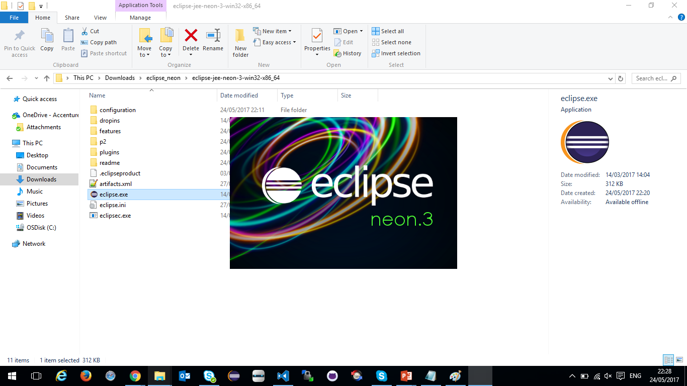

Baixando, configurando e criando aplicação Java com Eclipse
Baixe o Eclipse (de preferencia o NEON 3) pela internet neste link (para Windows x86), ou neste link (para Windows x64)

Após finalizar o download, vá até o local onde está o arquivo eclipse-jee-neon-3*.zip
Descompacte o arquivo zip com uma ferramenta de sua preferencia (Winrar ou 7Zip, por exemplo)
Entre na pasta que foi gerada e execute o arquivo "eclipse.exe"
A aplicação deverá iniciar e você será solicitado a criar um workspace (área de trabalho)
Fique à vontade para escolher a pasta que quiser para ser seu workspace
Clique em "Ok" e aguarde a aplicação carregar suas preferências padrões
Selecione a perspectiva java
Selecione Window > Preferences e digite "jre" no campo de pesquisa

Modifique a versão de compilação do java para 1.7

Modifique o pacote de execução java para jdk 1.7, para isso você deverá ter baixado, previamente, o jdk no site da oracle . Caso tenha baixado e instalado, clique em "Add", escolha a opção "Standard VM" e clique em "Next >".

Copie e cole o caminho do pacote jdk 1.7 instalado em sua máquina e clique em "Finish"
Selecione o novo jdk, clique em "Ok" e clique em "Yes" na mensagem que aparecerá
Volte em Window > Preferences e digite "maven" no campo de pesquisa selecionando a opção "User Settings" que aparece
Baixe o arquivo maven_settings.xml e coloque na pasta "C:\Users\%USERPROFILE%\.m2", coloque o caminho do arquivo na área "User Settings", conforme a imagem, e clique em "Ok".

Continue nos acompanhando, acesse nossa home e veja o quanto pode aprender com Java.
Até mais!